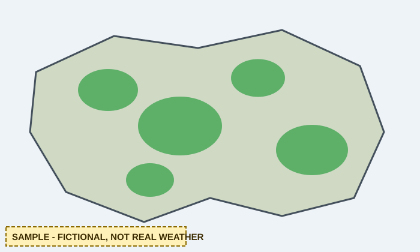

Sample national outlook: a slow fictional system crosses the Highplains
Sample data: fictional, invented for a research exercise; not real weather
Everything on this page is invented. The headline, map, hazard list and "My Forecast" widget demonstrate layout and behaviour only; none of it reports real weather.
National map and radar (sample placeholders)
Sample data: fictional, invented for a research exercise; not real weather

Demo: the two buttons only swap between two local placeholder images. There is no radar feed.
National forecast maps (sample) | Satellite images (sample)
Sample forecast discussion
Sample data: fictional, invented for a research exercise; not real weather
An invented summary: a fictional low-pressure system drifts east over the Highplains, bringing sample wind and showers, while Sunreach stays warm and dry. Read More (sample article)
Sample hazards, watches and warnings
Sample data: fictional, invented for a research exercise; not real weather
Each link opens the sample alerts page filtered to that type. Counts are invented.